Ziel dieses Abschnitts ist es, die mathematische Beschreibung mit anschaulichen Animationen zu verbinden. Als erstes Beispiel ist der Druckluftbehälter gewählt. Die Luftmasse mit Überdruck ist ein Energiespeicher. In der Animation ist er oval dargestellt. Die Farbe ist zwischen Blau und Weiß, je nach Luftdruck im inneren. Die Änderung des Luftdrucks hängt vom zu oder abfließenden Luftstrom ab. In diesem Beispiel wird der Behälter geleert. Unterhalb des Behälters ist ein Ventil dargestellt. Die Pfeile zeigen die Richtung des Luftstroms an. Die kleine Öffnung des Schlauchs drosselt die abfließende Luft. Je größer die Druckdifferenz, desto größer der Luftstrom. Die abfließende Luft reduziert den Druck im Behälter und damit auch den abfließenden Luftstrom. Es ist eine Rückkopplung. Am Anfang ist der Luftstrom groß und wird dann immer kleiner.
Nun wird die Änderung der Masse im Behälter betrachtet. Der Masseabfluß mab ist für die Änderung zuständig:
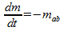(1)
Der Zufluß hängt von dem Widerstand W und der Druckdifferenz ab:
(2)
Der Innendruck hängt vom allgemeinen Gasgesetz ab. Das Volumen des Behälters ist konstant. Die Gaskonstante auch und die Temperatur wird als konstant angenommen.
 (3)
(3)
Die Formel wird nach m umgeformt:
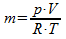(4)
In differentieller Form:
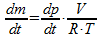(5)
und (2) in (1) eingesetzt:
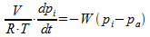(6)
Umgeformt:
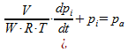(7)
Ersetzen des Terms V/(W*R*T) durch T1 und pi durch x und pa durch u:
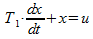(8)
Nun wird u=0 gesetzt und die Lösung für das Leeren des Tanks gesucht. Als Funktion für den Rateansatz nehme ich die e-Funktion:
(9)
In Gleichung (8) eingesetzt:
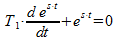(10)
Damit ergibt sich:
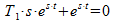(11)
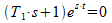(12)
Die e-Funktion wird nicht 0, daher ergibt sich s:
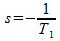(13)
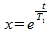(14) Der Exponent hat ein Minuszeichen, wird aber nicht angezeigt.
Ein Kondensator wird geladen. Der Strom wird mit einem Widerstand begrenzt. Der Kondensator ist das Speicherglied, der die Ladung speichert, analog zum Luftbehälter beim pneumatischen System. Der Widerstand ist analog zur Drosselung des Luftstroms vor dem Luftbehälter. Früher hat man die Berechnung von Systemen mit Analogrechner gemacht. Man hat mit elektrischen Schaltungen mechanische oder andere Systeme nachgebildet. Mit den digitalen Rechnern sind die Analogrechner ausgestorben.
In der unteren Animation sieht man den Zustand des geladenen Kondensators. Die Ladungen gleichen sich aus. Dann wird der obere Teil des Kondensators entladen. Da oben kein Widerstand ist, kann die Ladung schnell entweichen. Beim unteren Teil des Kondensators ist ein Widerstand. Dieser Widerstand wird durch eine Verengung des Ablaufs dargestellt. Die überzähligen Ladungen stoßen sich ab. Ähnlich wie der Druck im Druckluftbehälter. Sie werden aber durch den Widerstand am Abfließen gehindert.
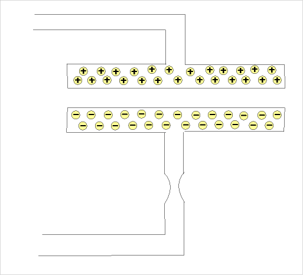
Im unteren Bild ist der Kondensator mit den eingezeichneten Strömen eingezeichnet:
|
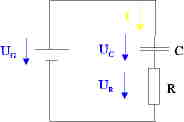 |
Nach der Maschenregel: (15) Der Strom: 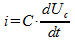(16)
|
Die Machenregel mit ohmschen Gesetz:
(17)
Einsetzen von (16) in (17)
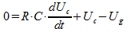(18)
Umgeformt und mit T1=R*C ,Uc = x, Ug=u
(19)
Die Gleichung ist ähnlich wie Gleichung 8. Die Lösung sieht aus wie (9) folgende.